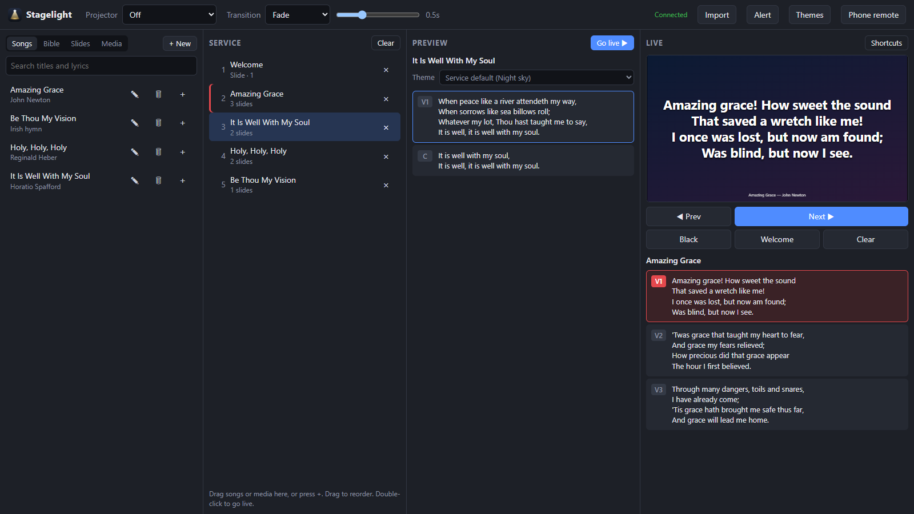
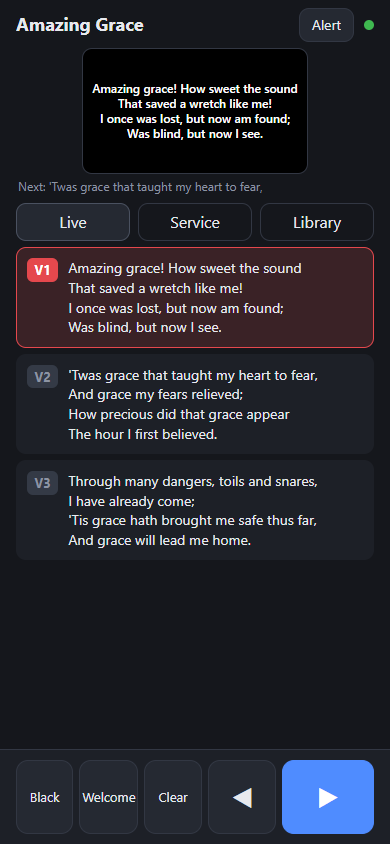
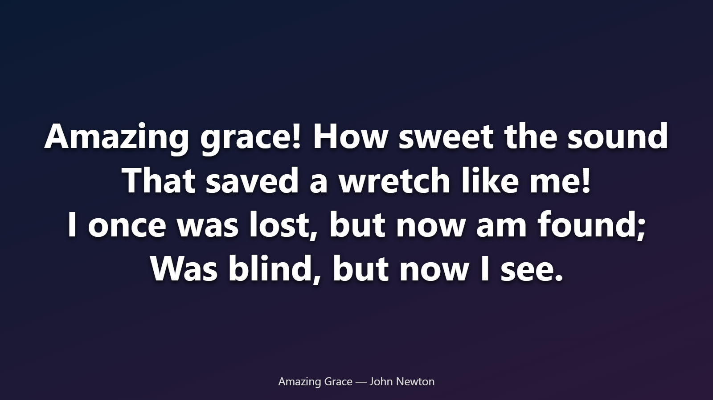

Worship slides you run from your phone
Stagelight puts songs, scripture, slides, videos and music on the projector, and lets you run the whole service from a phone. The laptop stays plugged in; you're free to move.
Windows 10 or 11 · No account · Your songs and Bibles stay on your laptop


Everything a Sunday needs
Built by someone who runs the slides at church, for the moments that actually happen in a service.
Phone remote
Scan a QR code and you're in. Next and previous, black screen, the service order and the whole library, with no app to install.
Lyrics over video
Keep a video or image playing and put songs, scripture and announcements on top of it.
Scripture, fast
Type “jn 3 16” or pick book, chapter and verse. Save Sunday's readings ahead of time and share them on WhatsApp.
Themes without the fiddling
Drag the text where you want it. It snaps to the centre and safe margins and shrinks to fit. No pixel values.
Smooth transitions
Fade, slide or zoom between slides. Backgrounds stay steady while only the words change.
Media and music
Images, videos, MP3s and YouTube links, in folders. Music keeps playing under whatever is on screen.
Alerts
Scroll a message across the top of the screen (“Would the owner of…”) without touching what's showing.
Shortcuts and clickers
B for black, D for the welcome screen, arrows or a presentation clicker for slides. Press ? to see them all.
Keeps itself up to date
Updates download quietly and install when you next restart, never in the middle of a service.
Bring your library with you
Already have songs and Bibles in another program? Export them, press Import, choose the folder, and Stagelight works out what each file is.
- Songs in the open OpenLyrics format, with verse labels and orders kept
- Bibles in OpenSong (
.xmm), Zefania, OSIS and USFX formats - Themes, images, videos and music
- Importing again is safe: nothing is duplicated or lost

Why I built this
I run the slides at my church. Every Sunday it was the same small battles: the laptop has to sit by the projector, so I was stuck next to it. The phone remote I tried never wanted to connect, and our venue has no Wi-Fi anyway. Lining up words on a slide meant typing pixel values until they looked right. I couldn't put lyrics over a video, and slides just snapped from one to the next.
So I made the tool I wanted: the laptop drives the projector, and I run everything from my phone over its own hotspot. Words go where you drag them, songs can sit on top of a video, and slides fade or glide instead of jumping. I also added the little things that make a Sunday smoother, like saving the day's readings ahead of time and sending them to the group on WhatsApp.
It's free, because I'd like other churches to have an easier Sunday too.
Lord-Raven1
How it works
No Wi-Fi at your venue? No problem: the laptop makes its own.
Install it on the laptop
Download and run the installer. Plug in the projector and Stagelight puts the output on it full screen by itself.
Turn on the hotspot
Switch on Windows Mobile hotspot and connect your phone to it. No internet needed.
Scan and go
Press Phone remote, scan the code, and run the service from wherever you're standing.
Questions
The short answers.
Is it really free?
Yes. No trial, no account, no subscription. If it helps your church you can leave a tip, but you never have to.
Does it need the internet?
No. The phone talks to the laptop directly over its hotspot or your Wi-Fi. The internet is only used to check for updates and to play YouTube links if you add them.
Where are my songs and Bibles kept?
Only on your laptop, in %AppData%\Stagelight. Nothing is uploaded anywhere, and uninstalling leaves them in place.
Windows says it “protected your PC”. Is that safe?
This blue message comes from Windows SmartScreen. It appears for programs that aren't code-signed, not because anything harmful was found.
What code signing is: developers can buy a certificate that stamps their name on the installer, so Windows can show who made it. These certificates cost a fair amount of money every year and are mostly bought by companies, which is a lot for a free app made in spare time, so Stagelight isn't signed yet. Windows then treats it like any new download it hasn't seen much of, and asks you to confirm.
To install: click More info, check the app name says Stagelight, then click Run anyway. You only need to do this once; updates install by themselves after that.
To stay safe: only download Stagelight from this site or its official GitHub releases page. A copy from anywhere else can't be vouched for.
Does it work on a Mac?
Not yet. Stagelight runs on Windows 10 and 11. The phone remote works on any phone with a browser.
Something isn't working, or I have an idea
In Stagelight, click the Stagelight name at the top left and choose Send feedback, or post it on GitHub.
Support Stagelight
Stagelight is free and made in spare time. If it makes Sundays easier for your church, a tip helps keep it going.